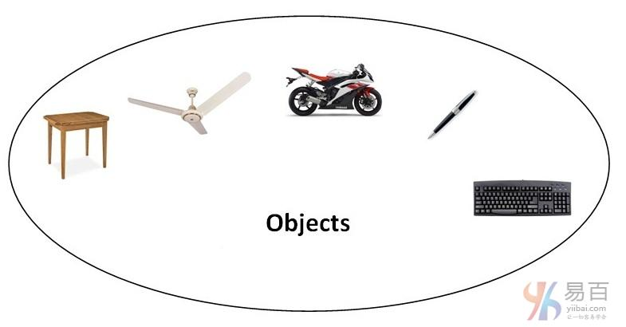
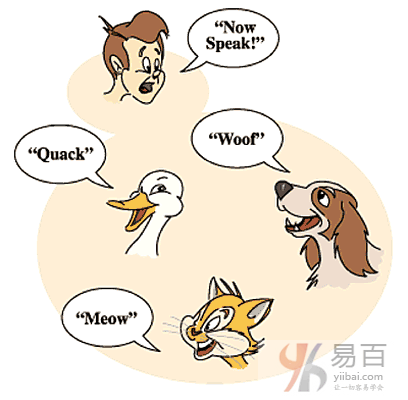
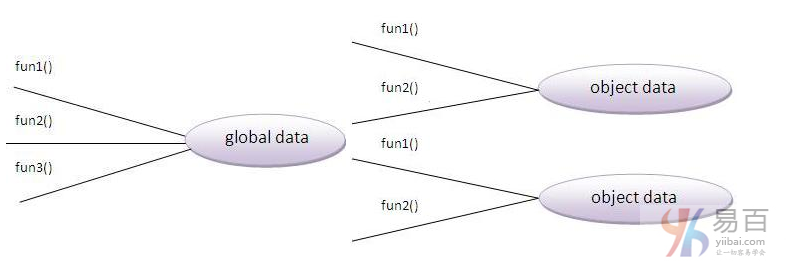

|
|
☰ 目录
19 面向对象OOP 概念在本节中，我们将了解面向对象(OOP)的基础知识。 面向对象编程只是一个模式，它提供许多概念，如继承，数据绑定，多态等等。
OOPs(面向对象编程系统)对象意味着真实的单词实体，如：笔，椅子，表等。面向对象编程是一种使用类和对象来设计程序的方法或模式。 它通过提供一些概念简化了软件开发和维护：
 1. 对象任何具有状态和行为的实体都称为对象。 例如：椅子，钢笔，桌子，键盘，自行车等。它可以是物理和逻辑的。 2. 类对象的集合称为类。 它是一个逻辑实体。 3. 继承当一个对象获取父对象的所有属性和行为，称为继承。 它提供代码可重用性。 它用于实现运行时多态性。 4. 多态性当一个任务通过不同的方式执行时，称为多态性。 例如：以不同的方式说服客户，画一些东西，如：形状或矩形等。 在java中，我们使用方法重载和方法重写来实现多态性。 另一个例子可以是说话，同是说话，人说话，猫说话和狗说话等，说话的方式都不太一样。  5. 抽象隐藏内部细节和显示功能称为抽象。 例如：电话，但我们不知道内部是如何处理通话/通信的。 6. 封装将代码和数据绑定(或包装)在一起成为单个单元称为封装。 例如：胶囊，它包裹着不同的药物。 一个java类是封装的例子。 Java bean是完全封装的类，因为所有的数据成员在这里是私有的。 OOP的优点相对于面向过程的编程语言
 面向对象编程语言和基于对象的编程语言有什么区别？除了继承，基于对象的编程语言遵循OOP的所有功能。JavaScript和VBScript是基于对象的编程语言。 |